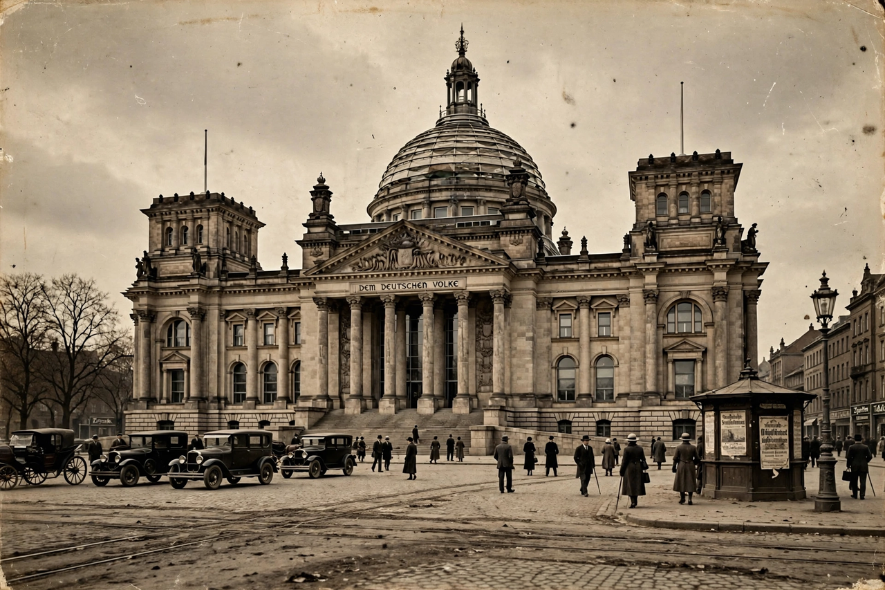

From Wikipedia, the free encyclopedia
| Reichstag | |
|---|---|
 The Reichstag building, Berlin | |
| Type | Lower house of the Weimar Republic |
| Established | 1919 (Weimar Constitution) |
| Disbanded | 23 March 1933 (last free sitting; Enabling Act) |
| Seats | Variable, c. 423–647 |
| Elections | Proportional representation |
| Meeting place | Reichstag building, Berlin; Kroll Opera House after February 1933 |
The Reichstag was the lower house of the parliament of the Weimar Republic (1919–1933). Elected by universal suffrage — including, for the first time in Germany, women — under a pure system of proportional representation, it was the republic's central democratic institution. Together with the Reichsrat, which represented the states (Länder), it formed the legislature under the Weimar Constitution.
The Reichstag elected the Chancellor's government by majority confidence, passed legislation and the budget, and could override certain presidential vetoes. The Reich President, however, could dissolve the Reichstag (Article 25) and rule temporarily by emergency decree (Article 48) — powers used increasingly after 1930, when Chancellor Heinrich Brüning governed by decree over a deadlocked parliament. Deputies enjoyed parliamentary immunity, a protection suspended in practice after the Reichstag Fire Decree of February 1933.
Proportional representation without an electoral threshold produced a fragmented party system. The great democratic parties of the "Weimar coalition" — the Social Democrats (SPD), the Catholic Centre Party, and the liberal German Democratic Party — lost their majority after 1920. Anti-system parties grew on both flanks: the Communist Party (KPD) on the left and, after 1929, the Nazi Party (NSDAP) on the right, which became the largest party in July 1932.
The Reichstag building was gutted by fire on 27 February 1933, a month after Adolf Hitler became Chancellor; parliament moved to the Kroll Opera House. In the March 1933 election, held under intimidation, the Nazis and their nationalist allies won a narrow majority. On 23 March 1933 the Reichstag passed the Enabling Act by 444 votes to 94 — only the SPD, led in the debate by Otto Wels, voting against, with KPD deputies arrested or excluded. The Act allowed Hitler to legislate without parliament, effectively ending the republic's democracy; thereafter the Reichstag met only as a rubber-stamp body.
The Weimar Reichstag's collapse remains a central case study in democratic failure. The post-1949 Federal Republic responded with a five-percent electoral threshold, a constructive vote of no confidence, and limits on emergency powers in the Basic Law.